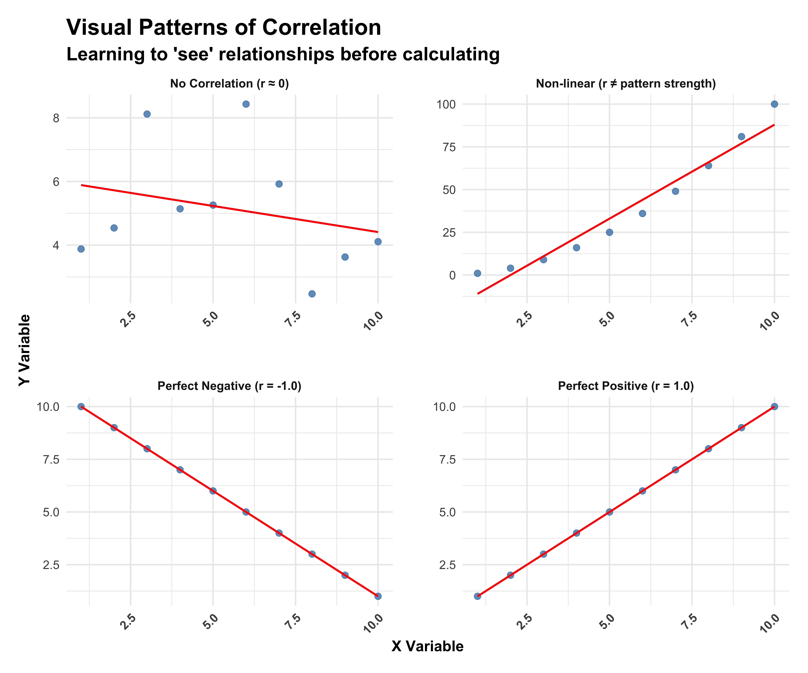
Correlation Study Plan
Correlation Analysis: A Graduated Study Plan
From Visual Intuition to Advanced Methods
Level 1: Visual Intuition (Foundation)
Goal: Develop pattern recognition for relationships
Research Objectives & Practical Applications
Why This Matters: Before diving into numbers, you need to “see” relationships in data. This visual literacy prevents you from being fooled by correlation coefficients that don’t match the actual pattern.
Real-World Problems This Solves:
- Quality Control: Spotting when manufacturing processes go off-track
- Marketing: Identifying if ad spend truly relates to sales increases
- Health Research: Recognizing dose-response relationships in treatments
- Finance: Detecting if two stocks actually move together or just coincidentally
Research Skills Developed: Visual data exploration, pattern recognition, intuitive understanding of association strength
Core Concepts
- Scatter plots as correlation’s “fingerprint”
- Positive vs negative relationships
- Linear vs non-linear patterns
- Strength of association (tight vs scattered clouds)
R Practice
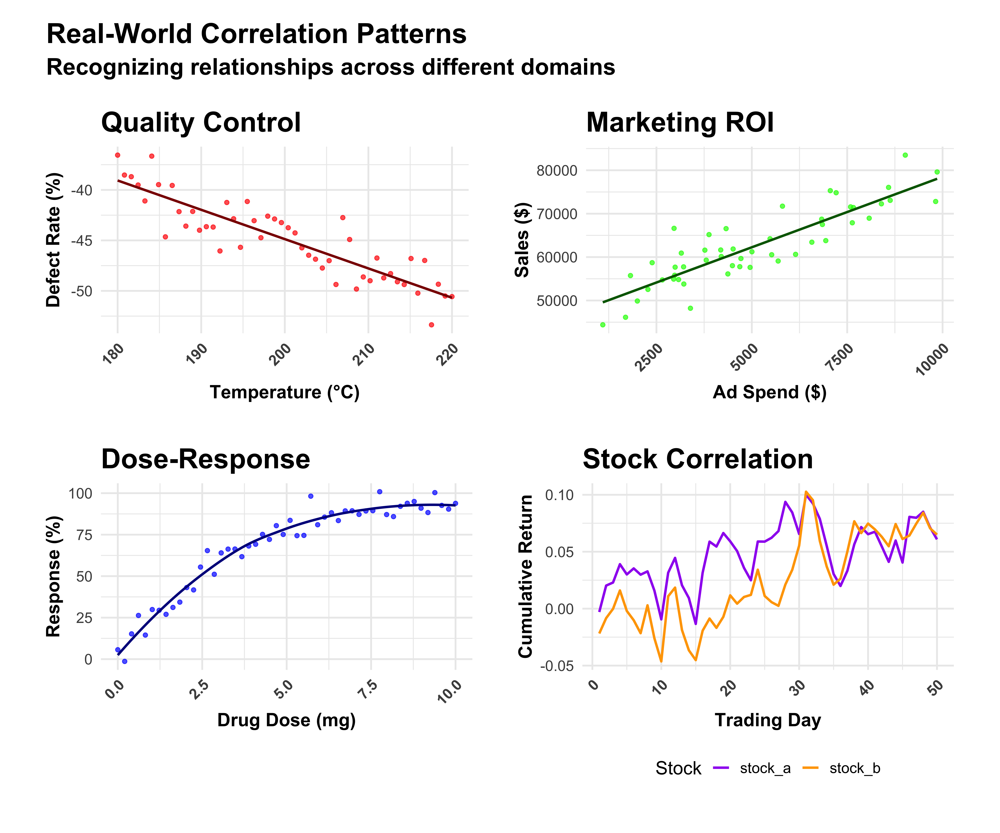
Milestone: Can look at any scatter plot and predict correlation direction and rough strength
Level 2: Pearson Correlation Basics
Goal: Understand the standard correlation coefficient
Research Objectives & Practical Applications
Why This Matters: Pearson’s r is the “common language” of correlation - used in 90% of research papers. Without understanding it, you can’t critically evaluate most scientific literature or business analytics reports.
Real-World Problems This Solves:
- Academic Research: Writing papers that meet publication standards
- Business Analytics: Quantifying relationships for stakeholder reports (e.g., “Customer satisfaction correlates r=0.73 with retention”)
- Risk Management: Measuring how closely different investments move together
- Survey Research: Validating that questionnaire items measure the same construct
- Performance Evaluation: Establishing if training programs actually improve results
Research Skills Developed: Standardized effect size interpretation, basic statistical communication, hypothesis formation
Core Concepts
- Pearson’s r (-1 to +1 scale)
- Standardized measure (unitless)
- Linear relationships only
- Correlation ≠ causation
R Practice
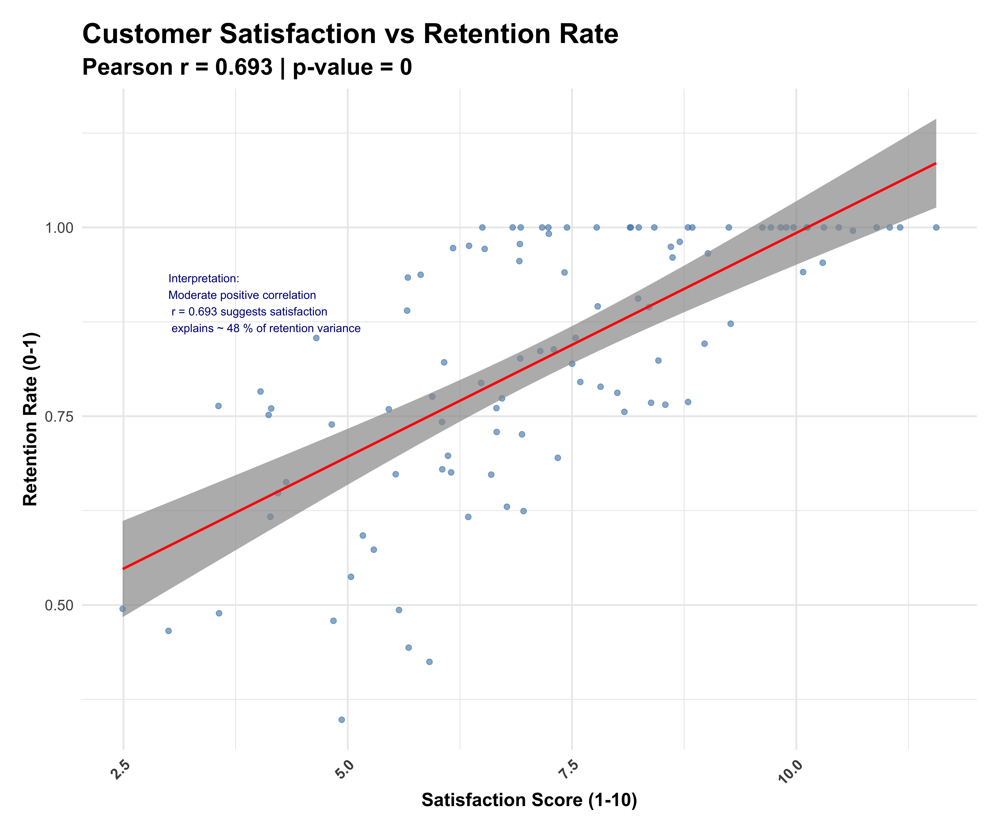

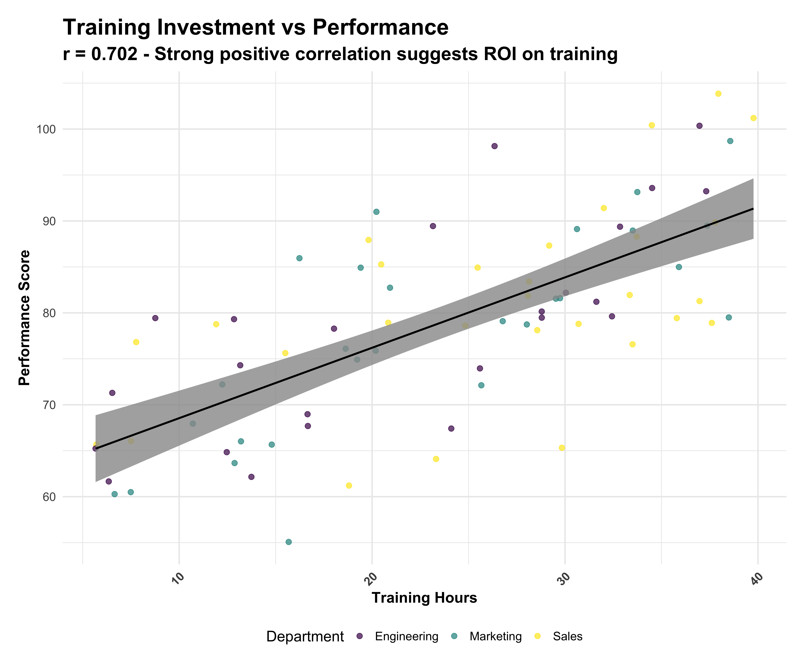
Key Interpretations
- |r| < 0.3: weak
- |r| 0.3-0.7: moderate
- |r| > 0.7: strong
Milestone: Comfortable calculating and interpreting basic correlation coefficients
Level 3: Statistical Inference
Goal: Determine if correlations are “real” or just random noise
Research Objectives & Practical Applications
Why This Matters: Anyone can find correlations in data by chance. This level teaches you to distinguish between meaningful relationships and statistical flukes - critical for making sound decisions based on data.
Real-World Problems This Solves:
- Clinical Trials: Determining if treatment effects are real or just random variation
- Market Research: Avoiding costly business decisions based on spurious correlations
- A/B Testing: Knowing when you have enough data to make reliable conclusions
- Academic Integrity: Meeting peer review standards for statistical rigor
- Investment Decisions: Understanding when historical correlations are reliable predictors
- Policy Making: Ensuring public health or economic policies are based on solid evidence
Research Skills Developed: Hypothesis testing logic, p-value interpretation, confidence interval reasoning, sample size planning
Core Concepts
- Null hypothesis testing for correlation
- p-values and confidence intervals
- Sample size effects
- Multiple testing corrections
R Practice
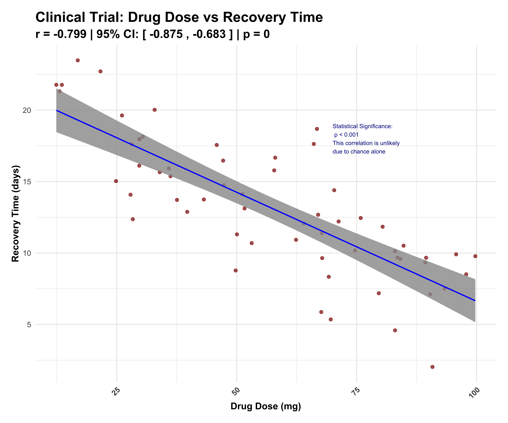
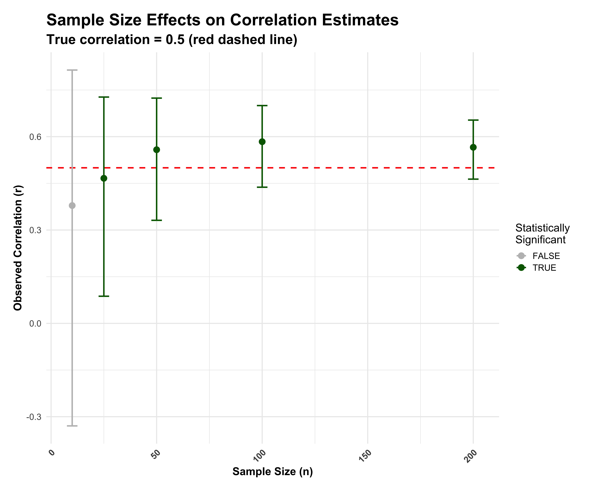
Milestone: Can assess statistical significance and understand confidence in correlation estimates
Level 4: Alternative Correlation Methods
Goal: Handle non-normal data and non-linear relationships
Research Objectives & Practical Applications
Why This Matters: Real-world data rarely meets Pearson correlation’s assumptions. This level prevents you from missing important relationships or drawing wrong conclusions from messy, real data.
Real-World Problems This Solves:
- Survey Research: Analyzing Likert scale responses (ordinal data) properly
- Medical Research: Handling skewed biomarkers or ranked results
- Environmental Studies: Detecting monotonic relationships in ecological data
- Social Sciences: Working with ranked preferences or income data
- Machine Learning: Feature selection with mixed data types
- Quality Control: Monitoring non-linear process relationships
- Customer Analytics: Understanding satisfaction rankings vs continuous metrics
Research Skills Developed: Assumption checking, method selection based on data characteristics, non-parametric thinking
Core Concepts
- Spearman’s rank correlation: for ordinal data or non-linear monotonic relationships
- Kendall’s tau: robust to outliers, better for small samples
- Point-biserial: one continuous, one binary variable
- Phi coefficient: both variables binary
R Practice
Choosing the Right Correlation Method
Pearson vs Spearman vs Kendall for different data types
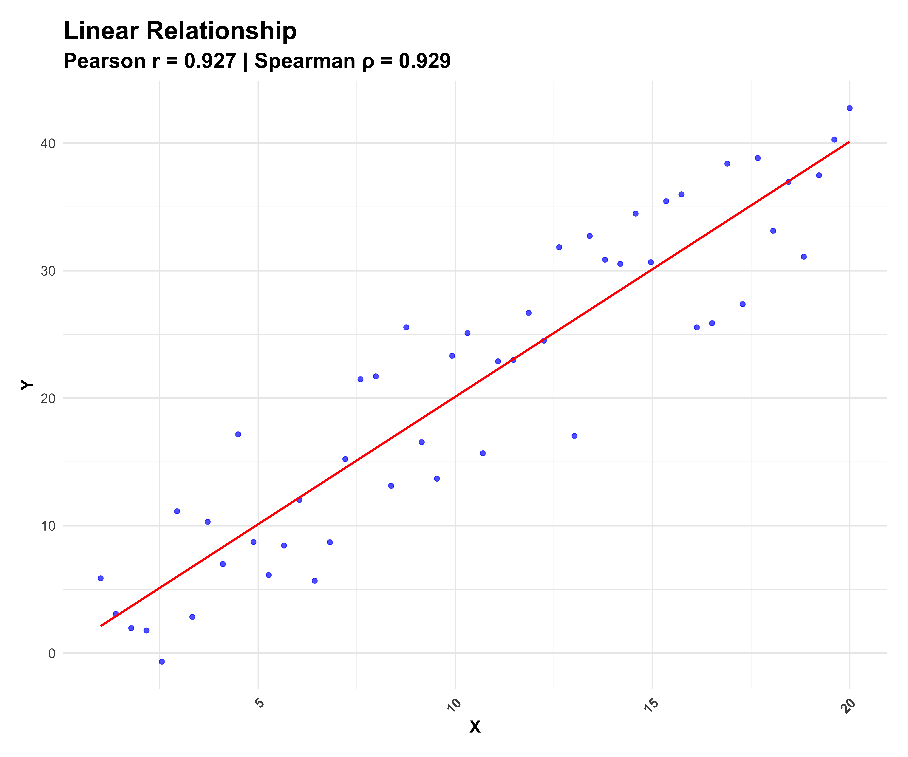

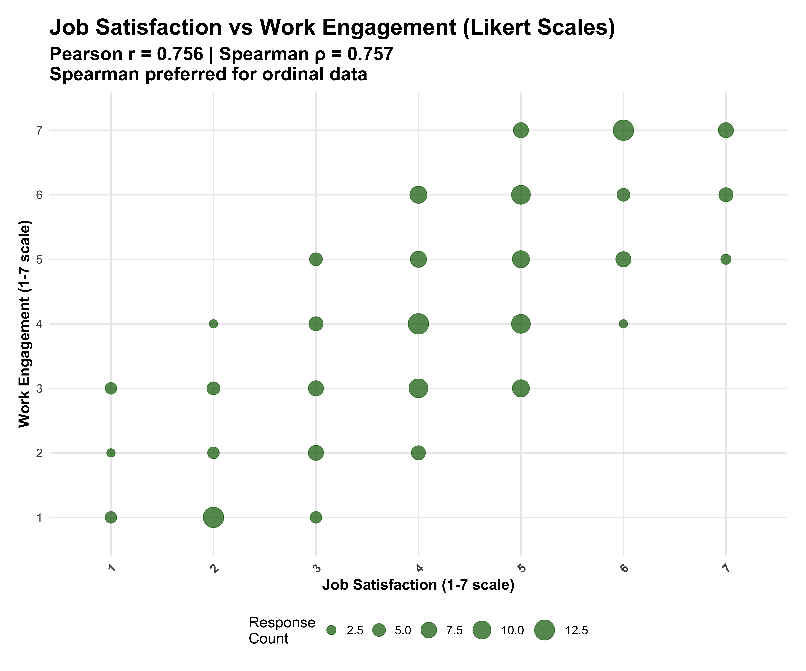
When to Use What
Think of these as different tools for different data “textures”:
- Pearson: Linear relationships, normal data
- Spearman: Monotonic relationships, ordinal data
- Kendall: Small samples, many tied values
Milestone: Can choose appropriate correlation method based on data characteristics
Level 5: Partial and Semi-Partial Correlations
Goal: Control for confounding variables
Research Objectives & Practical Applications
Why This Matters: Most real-world relationships involve multiple variables. This level helps you isolate the specific relationship you care about while controlling for confounding factors - essential for causal inference.
Real-World Problems This Solves:
- Medical Research: Isolating treatment effects while controlling for age, gender, baseline health
- Educational Research: Measuring teaching effectiveness while controlling for student background
- Economic Analysis: Understanding wage-education relationships while controlling for experience
- Marketing Attribution: Determining which advertising channels truly drive sales
- HR Analytics: Identifying what really predicts job performance beyond obvious factors
- Environmental Studies: Separating climate effects from other environmental factors
- Social Research: Understanding pure relationships between variables of interest
Research Skills Developed: Confound identification, variable selection, causal reasoning, advanced statistical modeling preparation
Core Concepts
- Partial correlation: relationship between X and Y controlling for Z
- Semi-partial: unique contribution of X to Y
- Multiple correlation: relationship between Y and multiple X variables
R Practice
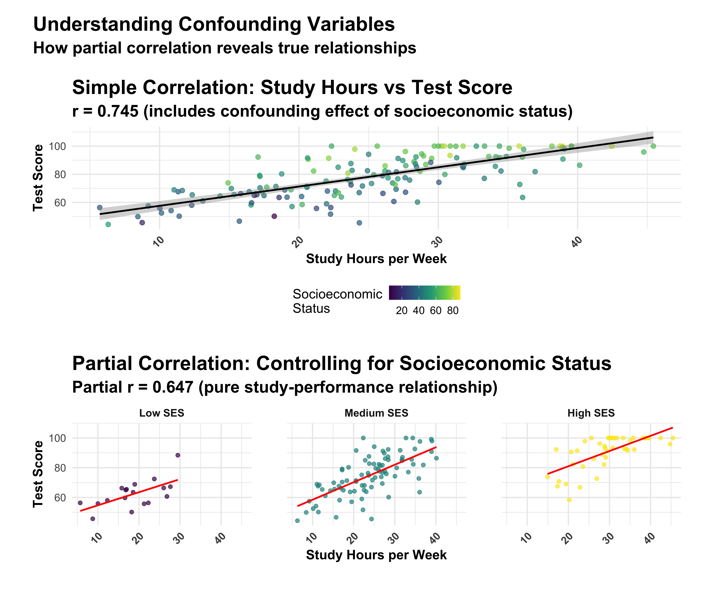
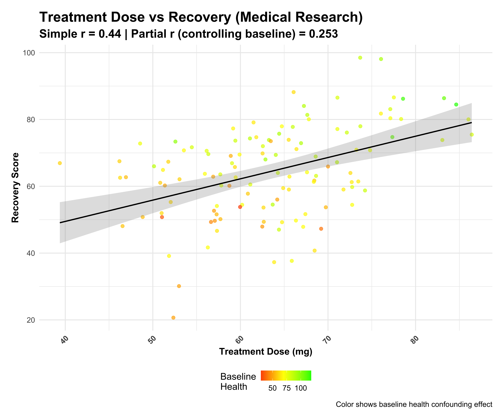
Analogy: Like isolating one voice in a crowded room by filtering out background noise
Milestone: Can disentangle complex multi-variable relationships
Level 6: Correlation Matrices and Visualization
Goal: Analyze many variables simultaneously
Research Objectives & Practical Applications
Why This Matters: Modern datasets often contain dozens or hundreds of variables. This level teaches you to find patterns in high-dimensional data and communicate complex relationships effectively to stakeholders.
Real-World Problems This Solves:
- Genomics: Identifying co-expressed genes in large gene expression datasets
- Financial Portfolio Management: Understanding correlations between many assets simultaneously
- Customer Segmentation: Finding patterns across multiple customer behaviors
- Survey Validation: Checking if questionnaire items cluster as expected
- Quality Control: Monitoring relationships between multiple process parameters
- Market Research: Understanding how many product features relate to each other
- Neuroscience: Analyzing brain connectivity patterns across many regions
- Climate Science: Understanding relationships between multiple environmental variables
Research Skills Developed: High-dimensional data visualization, pattern recognition in complex data, effective scientific communication
Core Concepts
- Correlation matrices
- Heatmaps and correlograms
- Hierarchical clustering of variables
- Network analysis of correlations
R Practice
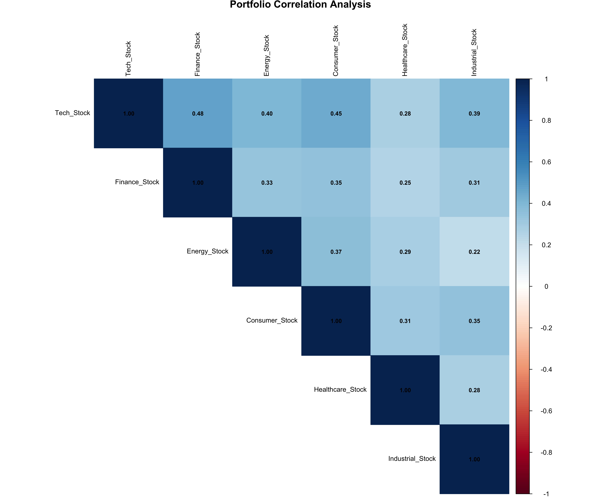
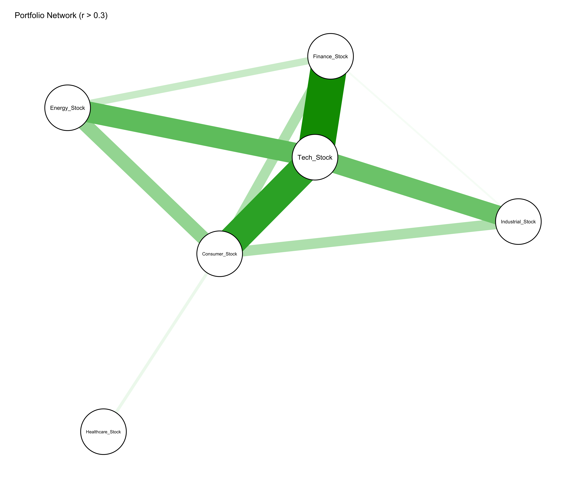
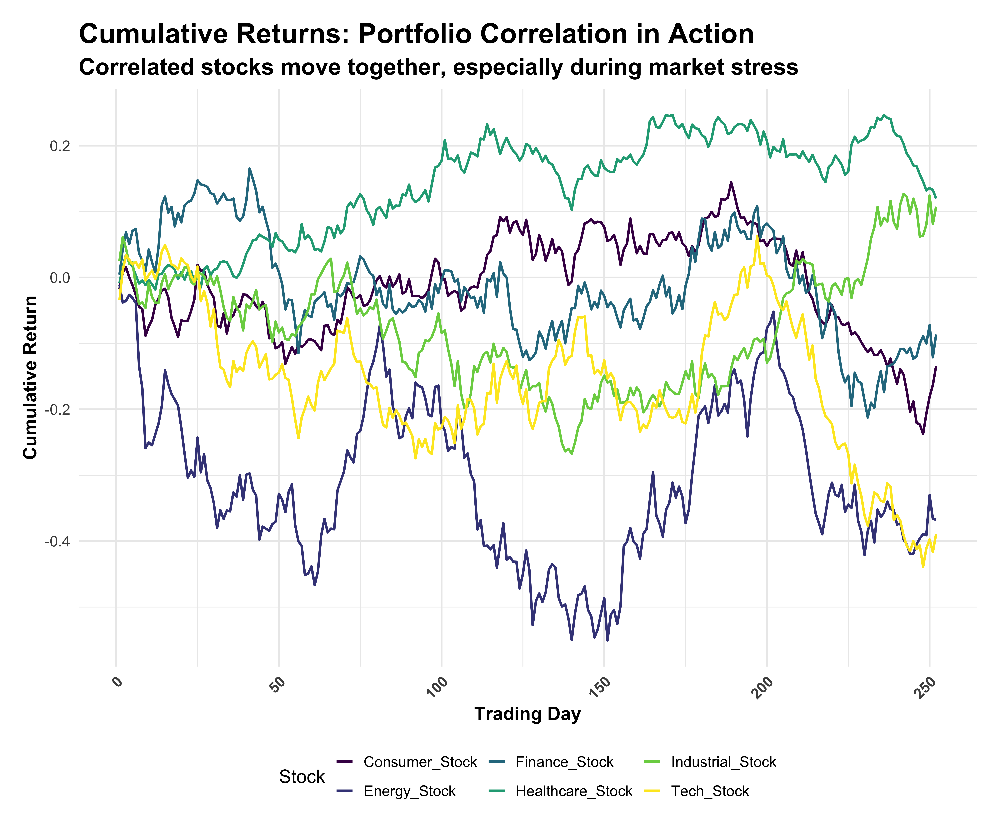
Milestone: Can explore and visualize complex multi-dimensional relationships
Level 7: Advanced Diagnostics and Assumptions
Goal: Understand when correlations might be misleading
Research Objectives & Practical Applications
Why This Matters: Correlations can be deeply misleading when assumptions are violated. This level teaches you to be a “correlation detective” - spotting when relationships aren’t what they seem and avoiding costly analytical mistakes.
Real-World Problems This Solves:
- Financial Risk Management: Detecting when correlations break down during market stress
- Clinical Research: Identifying when patient subgroups have different treatment responses
- Business Analytics: Spotting when aggregate trends hide important subgroup patterns
- Manufacturing: Detecting when outlier conditions distort process relationships
- Marketing: Understanding when demographic targeting masks true customer segments
- Epidemiology: Identifying when population-level relationships don’t hold for individuals
- Environmental Monitoring: Detecting when measurement errors or extreme events distort relationships
Research Skills Developed: Critical thinking about data, assumption checking, robust analytical practices, advanced diagnostic skills
Core Concepts
- Outlier influence: How single points can distort correlations
- Restriction of range: Truncated data underestimates correlation
- Curvilinear relationships: When Pearson’s r misses the pattern
- Simpson’s paradox: Correlations that reverse when grouped
R Practice
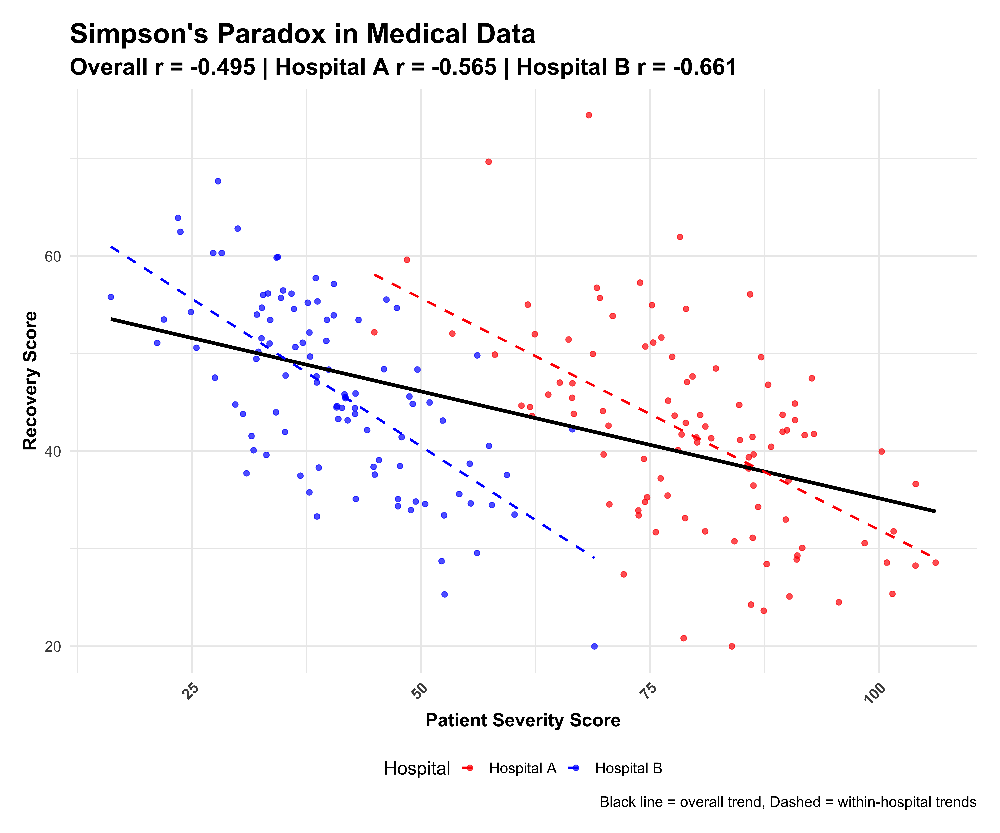
Milestone: Can diagnose problematic correlations and understand their limitations
Level 8: Modern Robust Methods
Goal: Handle real-world messy data
Research Objectives & Practical Applications
Why This Matters: This is the “advanced practitioner” level - you can now handle the messy, imperfect data that exists in the real world. These methods are what separate amateur from professional data analysis.
Real-World Problems This Solves:
- Big Data Analytics: Handling datasets with inevitable outliers and measurement errors
- Longitudinal Studies: Managing missing data and varying measurement conditions
- Cross-Cultural Research: Accounting for different response patterns across populations
- Sensor Data Analysis: Dealing with equipment malfunctions and environmental interference
- Financial Modeling: Creating robust models that work during market anomalies
- Medical Diagnostics: Developing reliable tests that work across diverse patient populations
- Climate Research: Analyzing data from multiple sources with different reliability levels
- Social Media Analytics: Handling noisy, unstructured behavioral data
Research Skills Developed: Advanced statistical methodology, uncertainty quantification, robust analytical thinking, cutting-edge research methods
Core Concepts
- Robust correlations: Resistant to outliers (Winsorized, trimmed)
- Bootstrap confidence intervals: Non-parametric uncertainty estimates
- Permutation tests: Distribution-free significance testing
- Bayesian correlation: Incorporating prior knowledge
R Practice

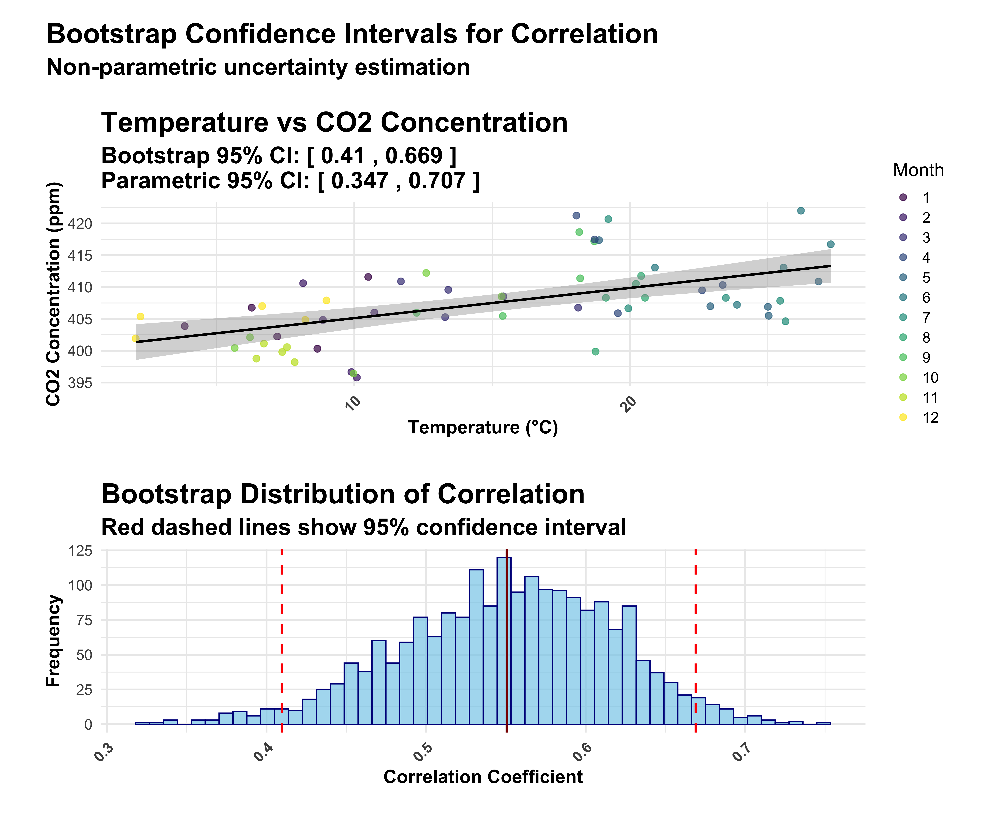

Bayesian Correlation
Bayes factor analysis
--------------
[1] Alt., r=0.333 : 2.518706 ±0%
Against denominator:
Null, rho = 0
---
Bayes factor type: BFcorrelation, Jeffreys-beta*Milestone: Can handle non-ideal data with sophisticated methods
Study Strategy
Week-by-Week Approach
- Weeks 1-2: Levels 1-2 (build intuition)
- Weeks 3-4: Level 3 (statistical foundations)
- Weeks 5-6: Level 4 (method variety)
- Weeks 7-8: Level 5 (advanced concepts)
- Weeks 9-10: Levels 6-7 (practical applications)
- Weeks 11-12: Level 8 (cutting-edge methods)
Practice Projects
- Level 3: Analyze relationship between height/weight
- Level 5: Economics data with multiple predictors
- Level 6: Gene expression or financial data
- Level 8: Climate data with outliers and missing values
Key Resources
Practice Projects by Level
Level 3 Practice: Analyze relationship between height/weight in a health dataset
Level 5 Practice: Economics data with multiple predictors
Level 6 Practice: Gene expression or financial data
Level 8 Practice: Climate data with outliers and missing values
Session Info
R version 4.4.3 (2025-02-28)
Platform: x86_64-apple-darwin20
Running under: macOS Sequoia 15.5
Matrix products: default
BLAS: /Library/Frameworks/R.framework/Versions/4.4-x86_64/Resources/lib/libRblas.0.dylib
LAPACK: /Library/Frameworks/R.framework/Versions/4.4-x86_64/Resources/lib/libRlapack.dylib; LAPACK version 3.12.0
locale:
[1] en_US.UTF-8/en_US.UTF-8/en_US.UTF-8/C/en_US.UTF-8/en_US.UTF-8
time zone: America/Chicago
tzcode source: internal
attached base packages:
[1] stats graphics grDevices utils datasets methods base
other attached packages:
[1] patchwork_1.3.0 qgraph_1.9.8 pwr_1.3-0
[4] BayesFactor_0.9.12-4.7 Matrix_1.7-3 coda_0.19-4.1
[7] boot_1.3-31 WRS2_1.1-7 car_3.1-3
[10] carData_3.0-5 ppcor_1.1 MASS_7.3-65
[13] ggcorrplot_0.1.4.1 corrplot_0.95 lubridate_1.9.4
[16] forcats_1.0.0 stringr_1.5.1 dplyr_1.1.4
[19] purrr_1.0.4 readr_2.1.5 tidyr_1.3.1
[22] tibble_3.2.1 ggplot2_3.5.2 tidyverse_2.0.0
loaded via a namespace (and not attached):
[1] tidyselect_1.2.1 psych_2.5.3 viridisLite_0.4.2 farver_2.1.2
[5] fastmap_1.2.0 reshape_0.8.9 digest_0.6.37 rpart_4.1.24
[9] timechange_0.3.0 lifecycle_1.0.4 cluster_2.1.8.1 magrittr_2.0.3
[13] compiler_4.4.3 rlang_1.1.6 Hmisc_5.2-3 tools_4.4.3
[17] igraph_2.1.4 yaml_2.3.10 data.table_1.17.4 knitr_1.50
[21] labeling_0.4.3 htmlwidgets_1.6.4 mnormt_2.1.1 plyr_1.8.9
[25] RColorBrewer_1.1-3 abind_1.4-8 withr_3.0.2 foreign_0.8-90
[29] stats4_4.4.3 nnet_7.3-20 grid_4.4.3 lavaan_0.6-19
[33] colorspace_2.1-1 gtools_3.9.5 scales_1.4.0 dichromat_2.0-0.1
[37] cli_3.6.5 mvtnorm_1.3-3 rmarkdown_2.29 generics_0.1.4
[41] rstudioapi_0.17.1 reshape2_1.4.4 tzdb_0.5.0 pbapply_1.7-2
[45] splines_4.4.3 parallel_4.4.3 base64enc_0.1-3 vctrs_0.6.5
[49] jsonlite_2.0.0 hms_1.1.3 glasso_1.11 Formula_1.2-5
[53] htmlTable_2.4.3 jpeg_0.1-11 glue_1.8.0 stringi_1.8.7
[57] gtable_0.3.6 quadprog_1.5-8 pillar_1.10.2 htmltools_0.5.8.1
[61] R6_2.6.1 pbivnorm_0.6.0 evaluate_1.0.3 lattice_0.22-7
[65] png_0.1-8 backports_1.5.0 corpcor_1.6.10 MatrixModels_0.5-4
[69] Rcpp_1.0.14 fdrtool_1.2.18 gridExtra_2.3 nlme_3.1-168
[73] checkmate_2.3.2 mgcv_1.9-3 xfun_0.52 pkgconfig_2.0.3 Each level builds on the previous ones, like learning to drive - first you learn to steer, then add gas/brakes, then navigation, then highway driving!